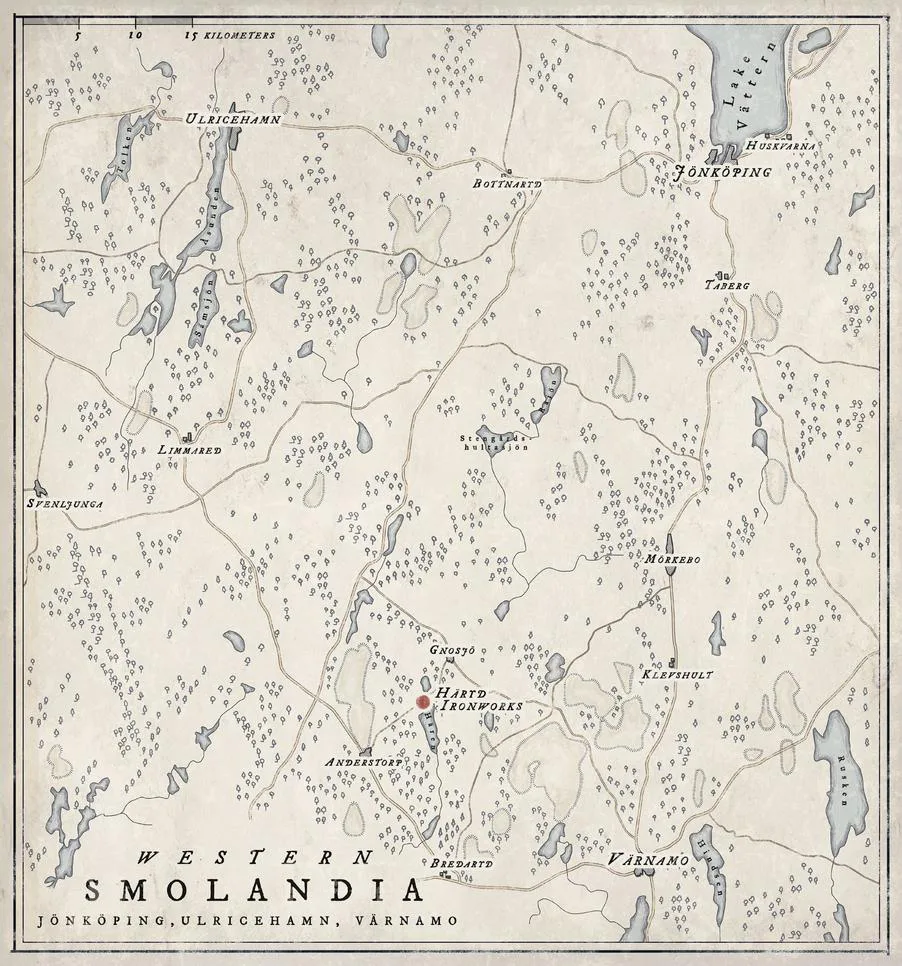

EinladungS. 27
An wen es betrifft,
mein Name ist Alfred Härenstam, aus dem Kirchspiel Häryd in Småland. Ich wende mich an Eure verehrte Gesellschaft, da ich für meine gegenwärtige Zwangslage keine andere Lösung sehe. Es betrifft meinen lieben Bruder und besten Freund August …
Ich bitte Euch, so bald wie möglich auf unseren Familienhof in Häryd zu kommen, um dieses Böse auszuräuchern und die Seele meines Bruders zu retten.
Hochachtungsvoll,
Alfred Härenstam
Dieses Mysterium beginnt auf Schloss Gyllencreutz, dem Hauptquartier der Gesellschaft in Upsala. Es ist später Sommer, und die tiefen, samtigen Nächte sind heiß. Das Königreich steckt in einer Krise. Schwere Hitzewellen, besonders im Süden, haben Dürren und Missernten ausgelöst, gefolgt von Elend und Hunger. Betteln und Diebstahl nehmen zu, und Tausende und Abertausende wandern in der Hoffnung auf ein besseres Leben nach Amerika aus.
Plötzlich klopft jemand heftig an die Tür. Ein bärtiger Postbote in strenger Uniform übergibt einen mit Wachs versiegelten Umschlag, dreht sich dann auf dem Absatz um und geht. Im Licht der Petroleumlampen können die Spielercharaktere den Brief lesen.
VorbereitungenS. 28
Wie üblich können sich die Spielercharaktere in ihrem Hauptquartier auf die Reise vorbereiten und dadurch einen Vorteil erhalten. Spielercharaktere, die Informationen über die Lage in Småland suchen, finden reichlich Zeitungsartikel über die Dürre, die Missernten und die Auswanderung nach Amerika. Suchen sie in der Schlossbibliothek und bestehen eine Probe auf Gelehrsamkeit, finden sie eine kurze Passage über den Hären-See (Handout 2B).
Die ReiseS. 28

Die Reise von Upsala ist lang und führt per Postkutsche durch die Dunkelheit des Kolmårdenwaldes und über die windumwehten Ebenen Östergötlands, bevor die Spielercharaktere die Wälder und Berge Smålands erreichen. Zeige den Spielern die Karte. Wie üblich haben die Charaktere während der Reise einen Vorteil zu erlangen.
Je weiter sie nach Süden kommen, desto heißer wird es. Wenn sie die kühle Luft des Vättersees hinter sich lassen und weiter in die Tiefen Smålands fahren, steigt die Temperatur auf unerträgliche Werte …
Hinterhalt! S. 28
Wenn die Handlung mit einer Actionszene beginnen soll, könnte eine Räuberbande die Kutsche überfallen, bevor sie Häryd erreicht …AnkunftS. 29
Als die Spielercharaktere an die Tür des Wohnhauses klopfen, erscheint ein dünner, dunkelhaariger Mann mit einer Laterne in der Hand im Eingang. Es ist Alfred Härenstam … Alfred kann die folgenden Informationen geben: